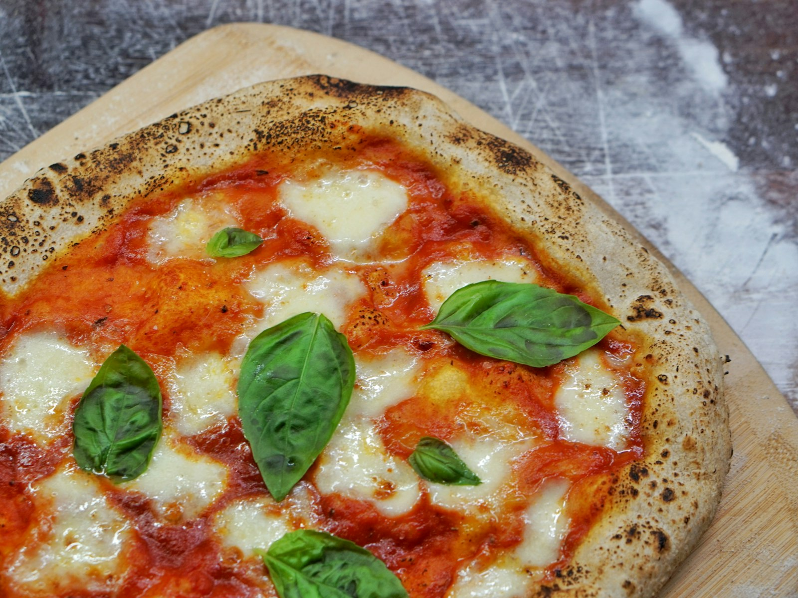
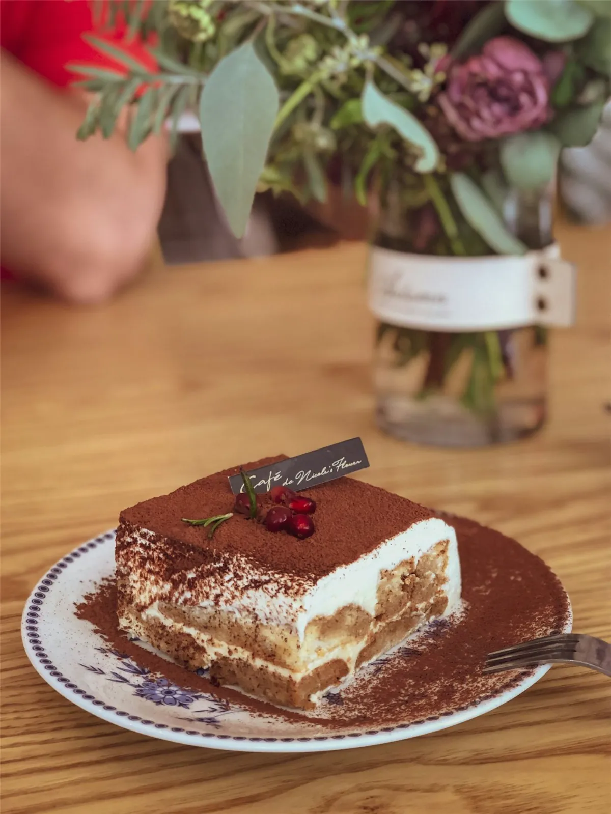

Trattoria · Pizzeria
O Sole Mio
Uw gastvrouw en gastheer: Annalisa en Carmine
Dinsdag t/m zondag, 17:00 – 22:30
Benvenuti in de Stevinstraat
Welkom in ons restaurant aan de Stevinstraat 204 in Den Haag.
Wij bevinden ons in het mooie stadsdeel Scheveningen, midden in het Belgisch Park en nabij de Noordzee en het Westbroekpark. Via doorgaande wegen zoals de Van Alkemadelaan en de Nieuwe Parklaan zijn wij uitstekend bereikbaar.
100% Italiaans
De chefkok tovert elke dag de meest uitgelezen gerechten op tafel in ons restaurant.
Wij zijn 100% Italiaans met roots in het prachtige Napoli. Wij serveren uiteraard de lekkerste pizza, pasta, vlees- of visgerechten, maar wij zijn ook benieuwd naar uw wensen!
U kunt uw wensen bij uw reservering kenbaar maken en onze chefkok bereidt uw keuze dan speciaal voor u.



Menukaart
Van antipasti tot dolci, met daarbij onze Italiaanse wijnen en dranken.
Antipasti freddi
- 15,00
Carpaccio di manzo
Rundvleescarpaccio met rucola en Parmezaanse kaas
- 15,50
Vitello tonnato
Gebraden kalfsvlees met tonijnsaus
- 15,00
Caprese di bufala
Buffelmozzarella met verse tomaat en basilicum
- 20,00
Antipasto O sole mio
Gemengde vlees- en visvoorgerechten
- 17,50
Carpaccio di polipo
Octopuscarpaccio
- 7,50
Pane
Brood met kruidenboter
Antipasti caldi
- 10,50
Focaccia al rosmarino
Pizzabrood met olijfolie en rozemarijn
- 16,50
Focaccia speciale
Pizzabrood met buffelmozzarella en Parmaham
- 16,00
Melanzana
Aubergine met tomatensaus en Parmezaanse kaas uit de oven
- 19,50
Gamberi piccanti
Gamba’s in een pittige saus
- 21,50
Frittura di pesce
Gefrituurde vis
Pasta fresca
- 20,00
Lasagna
Lasagna met bolognesesaus, bechamel en Parmezaanse kaas
- 19,50
Tortellacci ricotta e spinaci
Gevulde pasta met ricotta en spinazie in een cherrytomatensaus
- 22,50
Tortelloni gratinati al forno
Gevulde pasta met ricotta en spinazie, gegratineerd in de oven met bolognesesaus
- 26,50
Lunette al tartufo
Gevulde pasta met truffel in een truffelsaus met verse truffel
Pasta
- 18,00
Tagliatelle bolognese
Tagliatelle met bolognesesaus
- 16,50
Spaghetti carbonara
Spaghetti met spek, room, ei en Parmezaanse kaas
- 24,50
Spaghetti frutti di mare
Spaghetti met verschillende soorten zeevruchten
- 15,00
Penne arrabbiata
Penne met tomatensaus en Spaanse peper
- 18,00
Rigatoni gorgonzola e noci
Rigatoni met gorgonzola, room en walnoten
- 13,00
Spaghetti aglio e olio
Spaghetti met olijfolie, Spaanse peper en knoflook
Carne
- 30,50
Cotolette d’agnello
Gegrilde lamskoteletten met rozemarijn
- 30,50
Filetto gorgonzola
Ossenhaas in een gorgonzolasaus
- 27,50
Saltimbocca alla romana
Kalfsvlees met Parmaham en provolakaas in een saliesaus
Pesce
- 30,00
Gamberoni alla griglia
Gamba’s van de grill
- 28,50
Branzino con vellutata di gamberi
Zeebaars met een crème van garnalen
Vis en vlees worden geserveerd met groenten en aardappel.
Contorni
- 7,50
Insalata mista
Gemengde salade
- 8,50
Insalata rucola
Rucolasalade
- 5,50
Patate fritte
Frietjes
- 8,50
Spaghetti aglio olio
Spaghetti met olijfolie, Spaanse peper en knoflook

Pizza
- 12,50
Margherita
Tomatensaus, mozzarella en basilicum
- 14,50
Prosciutto
Tomatensaus, mozzarella en ham
- 14,50
Salame
Tomatensaus, mozzarella en Italiaanse salami
- 14,00
Funghi
Tomatensaus, mozzarella en champignons
- 15,50
4 Formaggi
Tomatensaus en 4 soorten Italiaanse kaas
- 16,00
4 Stagioni
Tomatensaus, mozzarella, ham, salami, paprika en champignons
- 15,50
Diavola
Tomatensaus, mozzarella, pittige salami en ’nduja
- 16,50
Calzone
Tomatensaus, mozzarella, champignons, ham, salami en artisjokken
- 19,50
O sole mio
Tomatensaus, mozzarella, champignons, salami, ham, Italiaanse worst, pittige salami, paprika, rucola en buffelmozzarella
- 18,50
Annabella
Tomatensaus, mozzarella, Parmaham, rucola en Parmezaanse kaas
- 16,50
Tonno
Tomatensaus, mozzarella, tonijn, uien en olijven
- 14,50
Napoli
Tomatensaus, mozzarella, ansjovis en kappertjes
- 18,50
Salsiccia
Mozzarella, Italiaanse worst en Napolitaanse broccoli
- 17,50
Vegetariana
Tomatensaus, mozzarella, champignons en uien
- 16,00
Capricciosa
Tomatensaus, mozzarella, ham, champignons en artisjok
- 17,00
Bufalina
Tomatensaus, buffelmozzarella en basilicum
- 17,50
Caprese
Tomatensaus, rucola, cherrytomaten en buffelmozzarella
- 18,50
Sfiziosa
Half calzone met tomatensaus, mozzarella, champignons en ham; half mozzarella, Italiaanse worst en Napolitaanse broccoli
- 17,00
Rustica
Tomatensaus, mozzarella, gorgonzola, rode ui en spek
Dolci
- 9,50
Sgroppino
Citroenijs met wodka en prosecco
- 8,50
Tiramisù
Huisgemaakte tiramisù
- 9,50
Tartufo al limoncello
IJstaart met limoncello
- 8,50
Tartufo nero
IJstaart met chocolade
- 9,50
Affogato al caffè
Vanille-ijs met warme koffie en slagroom
- 8,50
Dama bianca
Vanille-ijs met chocoladesaus en slagroom
- 7,50
Coppa gelato
Gemengd ijs met slagroom
- 9,00
Soufflé al cioccolato
Chocoladesoufflé met vanille-ijs

Witte wijnen
- 3,7519,00
Preciso Grillo
Italië, Sicilië · citrus, kruidig, vol
- 4,2521,00
Canapi Pinot Grigio Sicilia IGT
Italië, Sicilië · wit fruit, peer, meloen
- 5,5022,00
Bolla Chardonnay delle Venezie IGT
Italië, Veneto · rijk, fruit, vanille
- 5,0024,00
Bolla Soave Classico Rétro DOC
Italië, Veneto · elegant, bloemen, fris
- 5,9527,50
Castello Monaci Acante Fiano Salento IGT
Italië, Puglia · fluweelzacht, levendig, rijp fruit
- 34,50
Strozzi Vermentino Arabesque Bianco Toscano IGT
Italië, Toscane · sappig, fris, appel
- 36,00
Eò Pecorino IGT Terre di Chieti
Italië, Abruzzen · rijpe peer, lange afdronk, biologisch
- 49,00
Rapitalà Grand Cru Chardonnay
Italië, Sicilië · vol, toasty, vanille
Rosé wijnen
- 3,7519,00
Preciso Pinot Grigio Rosé
Italië, Sicilië · droog, zomers rood fruit, licht
- 24,00
Bolla Chiaretto Rosé DOC
Italië, Veneto · fris, rood fruit, droog
Mousserend
- 5,50
Rosanti Prosecco DOC Frizzante Piccolo
Italië, Treviso · levendige mousse, peer, bloemig
- 28,50
Bolla Prosecco Spumante DOC Extra Dry
Italië, Veneto · fruitige geuren, rijp fruit, lange afdronk
- 27,00
Bolla Rosé Sparkling Extra Dry
Italië, Veneto · frisse geuren, fruitig, bloemen
- 49,00
Monogram Blanc de Blancs Franciacorta DOCG
Italië, Lombardije · elegant, zacht, rijk
Rode wijnen
- 3,7519,00
Preciso Nero d’Avola Sicilia
Italië, Sicilië · rood bessenfruit, soepel, karakter
- 5,5025,00
Castello Monaci Pilunè Primitivo
Italië, Puglia · pruimen, kersen, viooltjes
- 6,0029,00
Eò Montepulciano
Italië, Abruzzen · kersen, ceder, biologisch
- 30,00
Rapitalà Sire Nero Syrah Sicilia DOC
Italië, Sicilië · donker fruit, kruidig, fris
- 34,00
Strozzi Chianti Colli Senesi Titolato Rosso DOCG
Italië, Toscane · fruit, elegant, lange afdronk
- 36,00
Borgogno Barbera d’Alba DOC
Italië, Barolo · pruimen, bramen, zacht
- 39,00
Bolla Valpolicella Classico Ripasso Le Poiane DOC
Italië, Veneto · kersen, kruidige aroma’s, vol
- 45,00
Borgogno Langhe Nebbiolo DOC
Italië, Piemonte · rozen, fluweelzacht, verwelkte bloemen
- 59,00
Borgogno ‘No Name’ Langhe Nebbiolo DOC
Italië, Piemonte · harmonieus, rozen, zachte smaak
- 69,00
Borgogno Barolo 2014
Italië, Piemonte · krachtig, vol, rood fruit
- 75,00
Bolla Amarone Valpolicella Classico Reserva
Italië, Veneto · complex, cederhout, drop
- 75,00
Mellini Brunello di Montalcino
Italië, Toscane · krachtig, uniek, verfijnd

Aperitief
- 4,50
Rosanti Hugo
Vlierbloesem, munt, limoen
- 7,50
Aperol Spritz
Aperol, Lurisia Bolle, Bolla Prosecco
- 7,50
Limoncello Spritz
Limoncello, Lurisia Bolle
- 7,50
Vermouth Tonic
Montanaro Vermouth Bianco, Lurisia Acqua Tonica
- 8,50
Negroni
Gin, Montanaro Vermouth Bianco, 6PM
- 8,50
Sylvius Gin Tonic
Gin, Dutch Dry, tonica sinaasappel, Lurisia acqua
- 9,50
Gin & Jonnie
Gastro gin, Lurisia Acqua Tonica
Frisdranken
- 3,60
Lurisia Acqua Tonica
- 3,60
Lurisia Aranciata
- 3,60
Lurisia Gazzosa
- 3,60
Niasca Limonata
- 3,60
Baladin Cola
- 2,60
Coca-Cola Light
- 2,80
Fuze Tea
- 2,60
Appelsap
- 5,70
Lurisia Stille 75 cl
- 5,70
Lurisia Bolle 75 cl
Bier
- 2,85
Bier klein
- 4,85
Bier groot
- 5,50
Birra Baladin Nazionale
Alle prijzen in euro’s.
Kom bij ons eten!
Reserveer telefonisch of stuur ons een bericht. Heeft u een speciale wens? Laat het weten bij uw reservering, dan bereidt onze chefkok uw keuze speciaal voor u.
070 79 20 015Wij zijn open van dinsdag t/m zondag, 17:00 – 22:30.
Contact
O Sole Mio Trattoria & PizzeriaStevinstraat 204
2587 EV Den Haag
- Telefoon
- 070 79 20 015
- info@osolemiodenhaag.nl
- Open
- Dinsdag t/m zondag 17:00 – 22:30
Maandag gesloten
Kom langs
Bent u al bij ons op bezoek geweest? Laat dan uw bevindingen aan ons weten via onze Facebookpagina. Uiteraard kunt u hier ook terecht voor al uw vragen. Wij beantwoorden deze graag voor u.